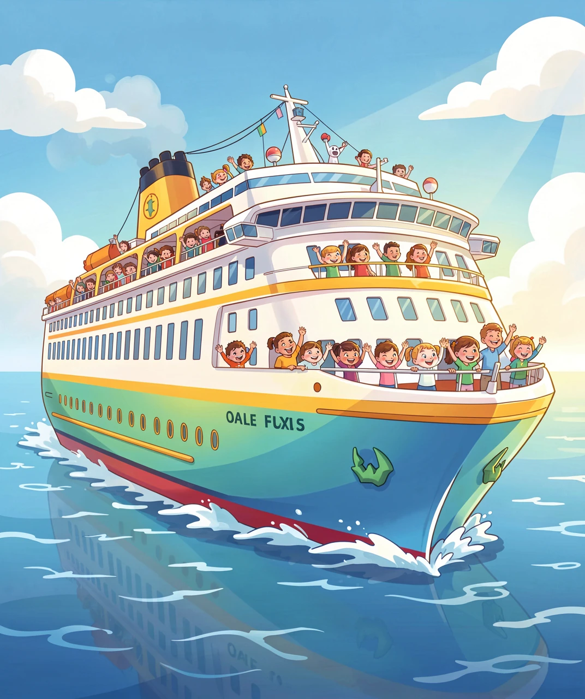
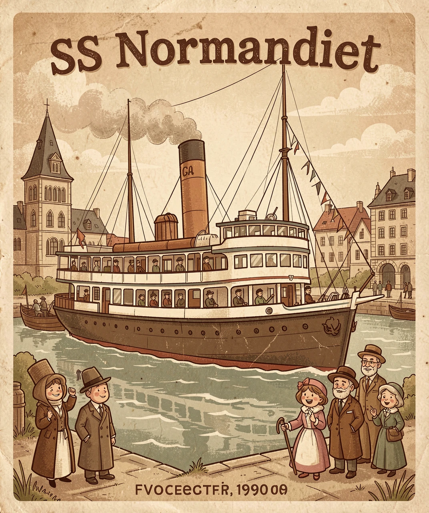
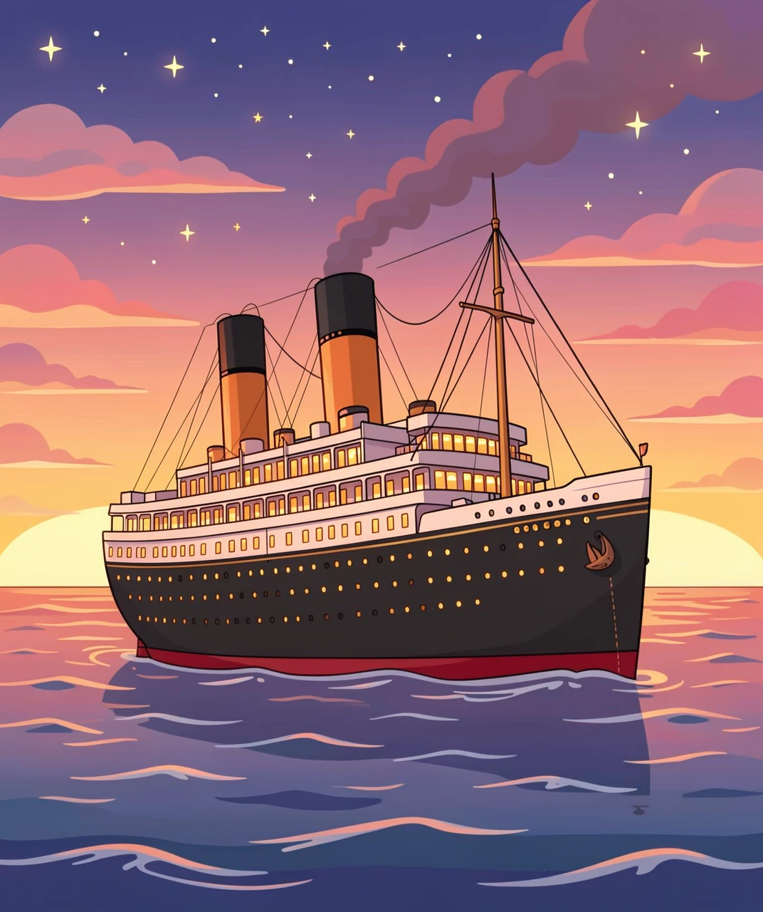
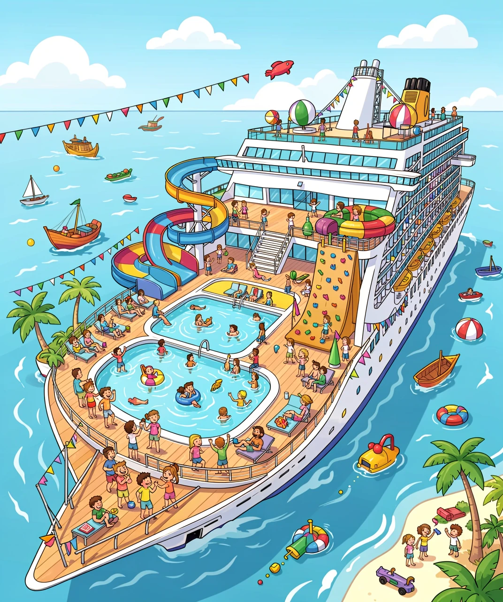
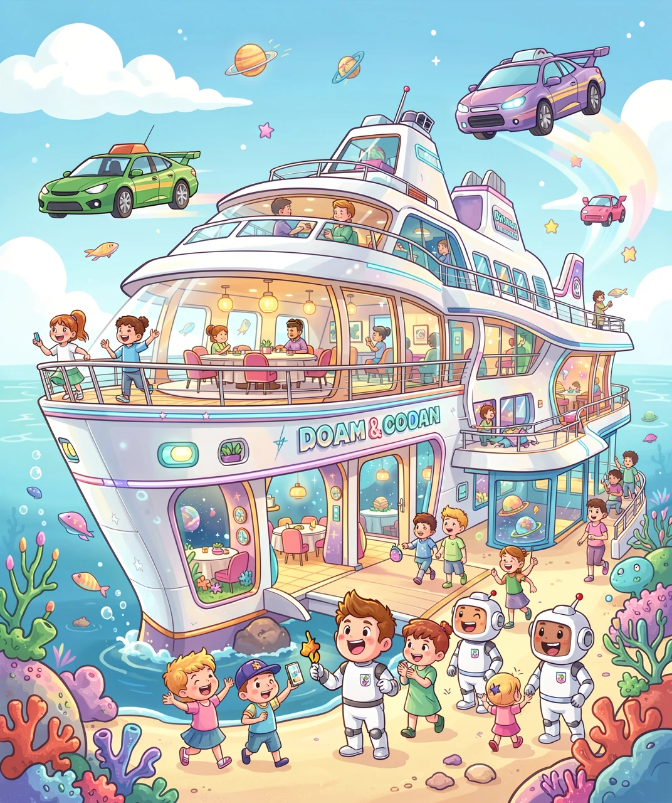

从蒸汽时代到海上乐园的奇妙旅程
你有没有想过，一座会移动的城市是什么样子的？邮轮就是这样的存在！它比足球场还长，比20层楼还高，能装下好几千人，在大海上自由航行。邮轮就像一座漂浮在海上的城堡，里面有餐厅、游泳池、电影院，甚至还有过山车和跳伞模拟器！

🚢 邮轮就像一座漂浮在海上的城市
邮轮和普通的渡轮可不一样。渡轮只是把你从A地送到B地，相当于"海上的公交车"。但邮轮本身就是目的地！你上船是为了享受船上的生活，而不只是到达某个地方。它就像一座移动的度假村，带你边走边玩。
邮轮的历史要从19世纪说起。那时候还没有飞机，人们想跨越大西洋只能坐船。1840年，英国人塞缪尔·丘纳德创办了定期跨大西洋航线，用蒸汽船运送乘客和邮件，这就是"邮轮"名字的由来——最初它真的就是运"邮"件的轮船！

⚓ 19世纪的蒸汽邮轮，跨越大洋的先锋
早期的蒸汽船条件很艰苦，乘客们挤在狭小的船舱里，晕船是家常便饭。但到了20世纪初，航运公司开始竞争——谁家的船更快、更豪华。著名的"毛里塔尼亚号"1907年创下了横渡大西洋的速度纪录：4天10小时！这个纪录保持了22年！
说到邮轮历史，有一艘船的名字你一定听过——泰坦尼克号。1912年4月15日，这艘号称"永不沉没"的豪华巨轮在首航中撞上冰山，沉入大西洋冰冷的海水。超过1500人在这场灾难中失去了生命。

🌟 泰坦尼克号——一段永不被遗忘的历史
泰坦尼克号为什么会沉没？原因有很多：船开得太快、冰山警告被忽视、救生艇数量严重不足……但最根本的原因是人们太自信了，认为这艘船永远不会出事。泰坦尼克号的悲剧告诉我们：永远不要对大自然掉以轻心。
好在，这场灾难带来了重要的改变：
① 1914年，《国际海上人命安全公约》签订，所有船只必须配备足够的救生艇
② 成立了国际冰情巡逻队，监测北大西洋的冰山
③ 所有船只必须保持24小时无线电监听，不能关机
④ 安全演习成为强制要求——就像你坐飞机前的安全演示一样
今天的邮轮早已不是当年的"交通船"了，它们简直就是海上主题公园！让我们一起看看现代邮轮上有哪些让人尖叫的设施：

🎪 现代邮轮上的设施比你想象的还要多！
| 设施 | 描述 | 在哪家船上有 |
|---|---|---|
| 🏎️ 赛车跑道 | 在船顶开卡丁车 | 皇家加勒比 |
| 🪂 跳伞模拟 | 垂直风洞体验"飞翔" | 皇家加勒比 |
| 🎢 过山车 | 船顶的真正过山车！ | 嘉年华 |
| 🏄 冲浪模拟 | 甲板上冲浪不用等浪来 | 皇家加勒比 |
| 🧊 真冰溜冰场 | 船上居然有真冰场！ | 皇家加勒比 |
| 🌳 中央公园 | 船中央种满真植物的公园 | 皇家加勒比 |
除了好玩的，吃的也不含糊！现代邮轮上通常有十几甚至几十家餐厅：自助餐厅、法式大餐、日本料理、意大利披萨……有些船还有米其林星级大厨坐镇。很多餐厅都是包含在船票里的，想吃什么随便吃！
未来的邮轮会变成什么样？工程师们已经画出了让人目瞪口呆的设计图！

🚀 未来的邮轮可能比科幻电影还酷
想象一下：你住在一个可以移动的海上社区，它不只是一个度假的地方，而是你的家！邮轮可能会变成"海上城市"，有人长期住在上面，每到一个港口就下去逛几天，然后再启航去下一个国家。一年下来，你可以环游世界好几圈！
未来的邮轮还可能使用清洁能源，比如液化天然气（LNG）和氢燃料电池，减少对海洋的污染。有些设计甚至加入了太阳能板和风力发电，让邮轮变得更加环保。
也许有一天，你也可以设计一艘属于自己的邮轮！是加上水下观景舱，还是建一座海上天文台？未来的大海，等着你去探索！⚓
💡 答案：1-B 2-C 3-C 4-B 5-C